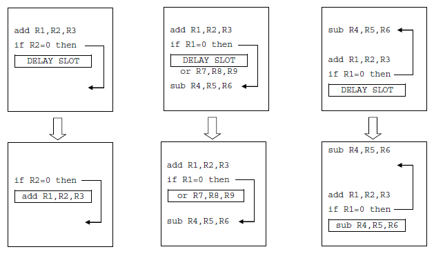

As dependências de controle ocorrem quando o fluxo natural do programa sofre modificações. Isso acontece, por exemplo, quando há utilização de instruções condicionais, as quais podem alterar ou não a ordem em que as instruções serão executadas e o program counter (PC) atual. Ao analisar a estrutura do pipeline estudado como exemplo, a decisão sobre o desvio ou não é feita apenas na etapa da decodificação da instrução, a instrução subsequente já foi lida da memória para o processador. No entanto, caso o salto precise ser tomado, a instrução carregada é errada e é necessário esvaziar o pipeline.
Para solucionar este problema é possível simplesmente “congelar” o pipeline, inserindo bolhas que não executam nenhuma instrução, até que o resultado do desvio seja conhecido. No entanto, caso o pipeline seja composta por muitas etapas e o estágio em que a decisão do fluxo é tomada esteja muito para frente, essa estratégia passa a ser muito lenta, tornando a execução do programa devagar.
Redução de Atrasos nos Desvios
Como foi discutido, o atraso no pipeline devido aos desvios condicionais é de três ciclos. Para minimizar o efeito desse tipo de dependência há duas possibilidades: avaliar a decisão do desvio ou calcular o endereço de desvio mais cedo.
Estas duas abordagens podem ser implementadas com algumas alterações no hardware, de forma que tanto o circuito de decisão do desvio como o circuito para o cálculo do novo valor do PC passe a agir no segundo estágio da execução da instrução. Esses circuitos formam uma nova unidade no nosso processador chamado Hazard Detection Unit e fazem com que a penalidade seja de apenas um ciclo para os desvios condicionais mais comuns.
Previsão de desvios
Todas as soluções citadas até agora são implementadas através de modificações no hardware do processador. Embora essas opções apresentem uma boa alternativa para a arquitetura estudada (MIPS), como já comentado, outras arquiteturas têm pipelines mais longos, o que faz com que sofram uma penalidade muito maior. Sendo assim, foram criadas outras alternativas para lidar com as dependências de controle, as chamadas previsão de desvios (branch prediction).
A forma mais simples de previsão é sempre seguir o fluxo sequencial, considerando que o desvio não será tomado e corrigindo essa suposição apenas se necessário. Caso o desvio realmente não deva ser tomado, é só continuar normalmente a execução do programa, mas caso contrário, é preciso descartar as instruções já lidas e decodificadas que não devem ser executadas. Para isso, basta alterar todos os valores de controle para 0, impedindo qualquer ação no processador. Como já visto, no pipeline estudado a decisão é feita apenas no estágio MEM, então é preciso descartar todas as instruções carregadas nos estágios anteriores (IF, ID e EX).
Previsão estática de desvios
A previsão estática pode ser feita em tempo de compilação e é baseada em valores estatísticos determinados através da análise do comportamento do código ou através da execução prévia do mesmo (profile based prediction). Nela, o compilador simplesmente assume uma das opções a seguir:
- Todos os desvios devem ser tomados (branch taken);
- Todos os desvios não devem ser tomados (branch not taken);
- Os devidos serão tomados ou não dependendo do código do operation code;
- Os desvios anteriores são tomados e os desvios para frente são assumidos como não tomados (backward-taken, forward not-taken - BTFNT).
Quando a previsão é errada, é preciso esvaziar o pipeline, gerando “bolhas” e atrasando a execução do código. Como a escolha do comportamento do previsor é fixa e não pode ser alterada durante a execução do programa, este tipo de previsão apresenta uma baixa taxa de acertos.
Previsão dinâmica de desvios
A previsão dinâmica de desvios procura analisar a variação do comportamento de desvio durante a execução dos programas.
A forma mais simples de se fazer essa previsão é através do branch history table (BHT), o qual consiste em uma pequena memória indexada pela parte menos significativa do endereço da instrução de desvio. Nessa memória é armazenado a ação que deve ser tomada no próximo desvio de acordo com seu comportamento anterior.
Previsor de 1 Bit
Nesse previsor, a memória apresenta apenas um bit indicando se o desvio foi tomado ou não no último acesso. Se o previsor errar a previsão ele troca de estado.
Este previsor é eficaz, por exemplo, na iteração de um loop, uma vez que ele prediz corretamente um desvio enquanto o loop não termina.
Previsor de 2 bits
Uma evolução deste método é o previsor de dois bits. Neste caso, é preciso que o previsor erre duas vezes seguidas para que ele troque de estado.
Esta memória de previsão pode ser implementada como uma cache especial integrada com o circuito do ciclo de busca (IF). Apesar dessa implementação ser bastante útil para diversas arquiteturas, note que ela não é válida para a que foi analisada aqui, pois no pipeline do MIPS o endereço de desvio é definido apenas no final do ciclo de decodificação (ID). Outra forma de implementá-la é no cache de instrução, armazenando os bits de decisão junto com as instruções que estão na cache.
É possível melhorar este método armazenando também, além dos bits de previsão de desvio, o endereço de destino caso o desvio seja tomado. Após a primeira vez que o desvio é tomado, o endereço calculado é guardado, sendo assim na próxima execução dessa mesma instrução não será necessário recalculá-lo. Essa implementação é chamada de branch-target buffer (BTB).
Desvios atrasados
Uma outra técnica existente para lidar com a dependência de controle é a chamada desvio atrasado (delayed branch), na qual a instrução seguinte à instrução de desvio é sempre executada, sendo o desvio tomado ou não. Para isso é necessário reordenar as instruções do programa de forma que a instrução que suceda o desvio sempre seja executada no programa e seu deslocamento não altere o fluxo do programa. Essa posição seguinte ao desvio é chamada posição de atraso (delay slot) é responsabilidade do compilador decidir qual instrução irá ocupá-la.
Para facilitar o trabalho do compilador, muitas arquiteturas apresentam a opção de anular o delay slot automaticamente caso o desvio condicional não seja tomado.
 Preenchimento do delay slot através da reordenação de instruçõesNote que essa solução pode ser não tão eficaz para pipelines mais longos, pois conforme discutido anteriormente, se o atraso do pipeline for maior que 1 ciclo, será necessário mais do que uma instrução sucedendo o desvio para que não haja ciclos parados.